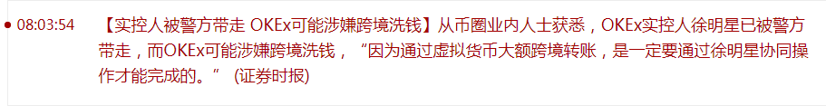
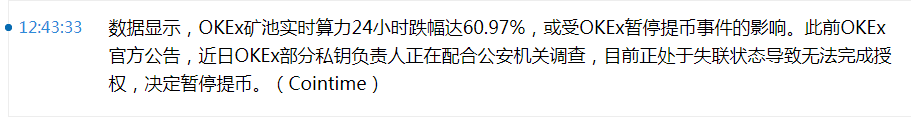
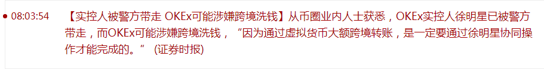
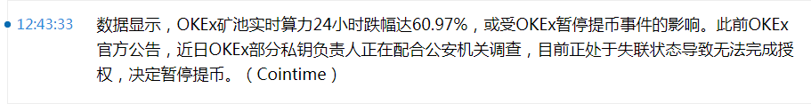

长话短说，刚在《异闻录》那边更新了题外话〔104〕，有些需要展开的内容考虑一下还是放在《设定集》这边比较好。
比方说提到了林肯，在市面上的各种舆论当中，其形象肯定与「（被迫）解放黑奴」有关。只不过「废奴」运动发生在南北战争之前，是内讧原因而不是结果，这个本末倒置的洗脑套路应该值得警惕。历史上北军战事不利，是通过大量引进欧洲移民「白皮自己人」解决的，这就是第十七篇设定《冠由下生乱自上作》当中略作展开的背景。
以人身依附关系为标志的「前资本主义时期」余孽一直延续到现在，是南北对立的根本原因，哪怕革命导师预言最发达的资本主义国家最先爆发无产阶级革命，也不能否认现在的美帝灯塔国虽然发达但不是资本主义国家，归根结底其实还是个「缝合怪」。注意「多元文化」不是「多源文化」，即便是白皮基督徒自己，也有与时俱进和抱残守缺的差别，各个阵营在粗放式增长还没有达到内卷极限之前，你好我好大家好互不干涉内政而已。
顺便，在国际一流和谐宜居之都「高学历精英社交圈」当中出现大批色目混混鸡鸣狗盗之徒冒充知识分子炒作「阳春白雪」贬低「下里巴人」的时候，通常都按照百善の新世界政治规矩和组织纪律，把黑鬼当成鄙视链最低端。黑鬼特色音乐也就是嘻哈，成为科班出身并且人脉充沛的通古斯艺术家的攻击对象，一般都使用「诲淫诲盗」定性。
于是这里按照职业习惯举个反例，其实在九省通衢の煎蛋当中与色目情报掮客展开舆论斗争的时候已经提到了。在《北へ》当中引用的饶舌精品《T.I. featuring Justin Timberlake «Dead And Gone»》就是弘扬主旋律传播正能量的典型，其中黑鬼歌手进行自我批评，指出黑鬼社区劣根性及其根源所在，并号召大批黑鬼北上参加革命军，然后南下横扫东南互保地区的「前资本主义时期余孽」。
就事论事，这首饶舌精品当中提到的黑鬼日常，与国际一流和谐宜居之都这迷宫地下城恶人谷惊人的相似。比方说「三个黑鬼」挑衅，不是两个也不是四个，就是在《设定集》正文和注释以及其它谈笑风生当中提到的亲身经历，确有三个色目混混鸡鸣狗盗之徒口称「有的人呢，就是没有自知之明」挑衅，当时我按照这里黑鬼歌手的选择「忍了」。再比方说「黑鬼贩毒并在无所事事时为非作歹」刚好对应个人记忆中上溯到1985年以来的户口本假亲戚形迹可疑以及其历史渊源「鲜卑毒贩」。
巧合太多了就不是巧合了，只能证明幕后黑手准备在我中华兲朝上国照搬百善の新世界的政治格局，然后统治伎俩就可以「复制并成功」，这才是黑鬼社区劣根性的根本原因所在，哪怕是干休所军休所也充沛着人渣真是再正常不过了。在《故人无字寄相思，敢向穷途怨不知》当中已经深入揭批了幕后黑手在腾笼换鸟见效太慢的情况下准备于境内培养大批「精神黑鬼」的革命路线图。正好可以对照国际化大都市「华语第一精日论坛」出现的相关情报：
教育部：中考体育将达到和语数外同分值水平按照职业习惯继续举反例，在《反黑贱种非洲通与反白贱种美国通》提到了另外一首自由意志形式饶舌片段《白垃圾对黑命贵》，黑白穷富之间又是正交关系。这种尽可能撕裂社会以便分而治之的统计伎俩，肯定会照搬到境内，其实就从砥砺奋进七八年来繁荣的简体中文互联网上大批色目情报掮客得意忘形肆无忌惮的炫耀「有錢是真的能為所欲為的.gif」以及其它人民群众喜闻乐见的内容也可以理解，这里不再重复。
刚爬起来酒劲还在头昏脑胀，昨天晚上喝多了回来之后补完题外话〔104〕，刚才上网乱转把这一宿情报掮客提供的应景素材补充进去，还剩下几句话放在这边说吧。
简单说，砥砺奋进七八年来南直隶「远东第一体育论坛」当中充沛着内涵段子的「开放区」妄议中央的日常就是「习习蛤蛤的一天」（原话）并爆料存在「蛤不撕包」同盟（最新进展《能把立场变化写好的故事片是真的耐看》《养的两只猫，关系突然决裂了怎么办》）。因为胡锦涛直到裸退（中南海「胡办」与「江办」同归于尽）为止都没当上「核心」，几次大造舆论都没能达成党内共识。有鸡巴尊贵并且消息灵通的内部人士透露，党内各派大佬轻蔑的嘲笑「嗤，奴才还想翻身做主子」，据称是原话。而公开放风就是新闻出版广播电影电视总局签发红头文件，对于《西游记》之类「鬼怪题材」划出条条框框，指桑骂槐说「建国以后的动物不许成精」。
是不是与色目情报掮客到处推送《动物世界》素材并叫嚣「全世界只有十四万四千人」的国家机密兼宇宙奥秘对应起来了？
所以《异闻录》那边直接备份了举头三尺有棱镜实时指使色目情报掮客在国际一流和谐宜居之都「高学历精英社交圈」评论「查博导包衣论」回答炒作伤寒马力，当时我正在码字还没上传呢，同时国际化大都市「华语第一精日论坛」那只绿皮青蛙又在深情呼唤「マリーーー」了也。
谁是动物？
就说马伯庸吧，当初其新浪博客背景图是「网络文学鬼才」，在之江临安「原创文学论坛」炒作的时候惹毛了一堆人。多少帐号都指出，有本事就跟其它码字巨侠拼更新拉月票去吖，在「网文界」混不下去，成天往出版社钻走实体路线算咋回事。后来各路码字巨侠的划时代大作当中充沛着「****」甚至整章整章以「政治敏感」理由「亦当删去」，或者整本书都消失不见，与此同时马伯庸「一字百元年入四千万」，对照活生生的网络段子变白纸黑字现场直播，现在各位明白了钦定文豪升级路线图了么？
说过了我是被其惹毛的一堆人当中脾气不好的一个，直奔其「主场」国际化大都市「华语第一精日论坛」，当面打脸「连“十九年七闰”都不知道还推算呢」，帐号就被党性坚定的老审查员以「政治敏感」理由「亦当删去」了也。所谓「网络文学鬼才」就这素质？后来还有屎绿配色远征军到之江临安「原创文学论坛」挑衅，说「马伯庸都有助理了，你还是光棍一根」，我反唇相讥「中南海“马办”啥时候成立的」，对照《新闻联播》生放送全票冻蒜人民领袖当众念两句诗「靡不有初，鲜克有终」之奇特口音那段，嘲笑「文曲星连拼音都不会标，还是领衔主演连拼音都不认识」，然后帐号又被党性坚定的老审查员以「政治敏感」理由「亦当删去」了也。
其它「码字工作室」文曲星与领衔主演的段子都是别人提供的，比方说「黄河小，浪底大，坝工程，开工啦」这种《大野三字经》，想必流传已久。
所以个人博客上传的第一篇文章，也是当时在之江临安「原创文学论坛」公开讽刺这帮名角大腕的划时代科幻巨著大纲，就用各路领衔主演开涮，以《觋铪演义》《A Tale of Hip-Hop》这种标题，影射「蛤不撕包」同盟「习习蛤蛤的一天」，无一字无来历。
长话短说，砥砺奋进七八年来，确切说是从《2012》年底九省通衢「军网最黄黄网最军」之上消息灵通人士嘲笑中南海「江办」文曲星收拾行李圆润的离开国际一流和谐宜居之都（或曰「滚回上海去，北京不是你的家」）开始，市面上《蛤三篇》的炒作就一浪高过一浪，大批童年才俊从来没听说过或者已经陌生的段子，又一次复活。尤其是在理工农医专业的高学历精英之间，互相打招呼时「念两句诗」已经成为政治规矩和组织纪律，好比相声当中讽刺文革时期打电话先念语录再谈事一样。
在这种氛围当中，无论是与文曲星斗嘴还是与诡辩唯物主义者斗嘴，都需要入乡随俗以彼之道还施彼身，包括但不限于在国际化大都市「华语第一精日论坛」注册帐号使用签名档（《知乎问答№031》），都实践了谈笑风生的两句基本原则。所以说在「我手写我口，古岂能拘牵」的码字过程中，现实中人民群众怎么说话的，用了哪些流行梗，我都会信达雅的如实记录下来。
举例就是第十二篇设定《此心安处即是吾乡》当中提到的「高学历精英社交圈话语体系」，以及《异闻录》正文〔011〕当中提到的「组织の千（岛湖）之试炼」，都是现实主义白描，无一字无来历。
洗完澡了精神抖擞容光焕发，上网乱转发现「匿名索虏」之上出现了一条色彩甚为浓厚的重要情报：
简单说，这份情报在之前曼德拉驾崩相关报道的同时境内炒作「如今南非有圣人，虽非豪杰也周成，四夷重译称兲子，否极泰来九国春」的时候见过，说布尔人到达南非比班图人还早，当时当地只有俾格米人和布须曼人，生产力处于「采集」阶段，就是「平时住在地下，饿了上树摘个果子吃，或者平时住在树上，饿了下地捡个果子吃」那种，还是怎么教都不懂与时俱进的先天愚型，比方说「人类（学家）」给几头牛手把手教放牧都没用，只要「人类」一转头，立刻杀掉吃肉。
然后得出结论：没有布尔人就没有新南非，只有布尔人才能救南非，只有布尔人才能发展南非。再然后说曼德拉的丰功伟绩就是把南非经济彻底摧毁，开放的大门越开越大，逼得钢铁侠只能以加拿大为跳板骨肉移民美帝灯塔国，于是才会被国际主流媒体吹上兲，从不吝啬各种溢美之词。
在注释〔卅四〕当中备份了素材，美帝灯塔国奥巴马大统领在曼德拉追悼会演讲，附赠的哑语翻译瞎比划，被定性为「精神病」送进上海二院就诊送回伦敦军情六处总部授勋，就是同时涌现的素材，引发了大批根红苗正忠君爱国的童年才俊嘲笑「傻哔黑人」的浪潮。
在《全世界闪米特太君，联合起来！》当中已经提供了「布须曼人与俾格米人」的形象了，当时色目情报掮客说复旦残联下属滴血认亲实验室已经鉴定过了，鸡巴标签分别是「A
」和「B
」，还科普曰拉丁字母序号越靠前就越原始，说这两拨太君「野蛮得不可理喻」，然后话锋一转说「C
通古斯太君」紧随其后「野蛮但尚可理喻」，再然后又是话锋一转说黑皮「E
泥鸽太君」都比国际一流和谐宜居之都的「满蒙复合体」进步。
不过色目情报掮客论证「鸡巴决定脑袋」唯种辩证法的过程中当中有个破绽，无法解释百善の新世界当中「Q
印第安太君」被万恶的旧大陆「R
印欧太君」吊打的原因，后来才打上补丁「碧池创造历史」唯种史观，说多亏了「J
色目太君」提供配种服务改良性状，于是「C
通古斯太君」才会横扫欧亚建立「蒙古治世」，最后感慨「这都是托了可萨汗国的福啊」。相关内容在《北巡讲话「工匠要为种族灭绝添砖加瓦」》当中展开了一部分。
当时九省通衢「军网最黄黄网最军」的情报掮客语焉不详，仅仅暗示邓丕平的俩儿子邓瘫方邓健方不是同一个品种，谁A
谁B
不知道。所以在构思中，按照「短叟」形象分配了俾格米太君，并把布须曼太君修辞为「灌木侠」，与曾经活跃在国际一流和谐宜居之都的孤星共和国贵种扯上关系。于是思路豁然开朗，并且无一字无来历。
刚爬起来酒劲还在头昏脑胀，上网乱转发现耍钱的新浪或曰后浪正（2020年10月17日 19:16）在奔走相告一条党国高音喇叭昭告天下的重要情报：
习近平在中央政治局第二十四次集体学习时强调 深刻认识推进量子科技发展重大意义 加强量子科技发展战略谋划和系统布局去年这个时候（2019年10月25日 19:12），耍钱的新浪或曰后浪也在奔走相告一条党国高音喇叭昭告天下的重要情报：
习近平在中央政治局第十八次集体学习时强调 把区块链作为核心技术自主创新重要突破口 加快推动区块链技术和产业创新发展不知道明年这个时候，耍钱的新浪或曰后浪会奔走相告什么。
其它耍钱的新浪或曰后浪奔走相告的相关情报：
 



17:13:58【OKEx暂停提币 创始人徐明星已被警方带走】OKEx发布“暂停提币公告”称，近日该公司部分私钥负责人正在配合公安机关调查，目前正处于失联状态导致无法完成授权。有两位接近OKEx的消息人士表示，公告中“配合公安机关调查”的正是OKEx的创始人徐明星。其中一位人士还表示，徐明星至少一周前已经被警方带走，多日未在工作大群中现身。 (财新)
01:49:13【区块链成十省市新基建规划“新担当”，数据确权“最亮眼”】自4月20日新基建概念清晰界定后，据不完全梳理统计，在15个省市地方政府发布的新基建相关规划政策中有10个省市重点提及区块链技术及规划，区块链目标不一，整体较为务实，数据确权方面备受关注，并有多地规划区块链落地应用数量、类型、投入等相关指标。
08:03:54【实控人被警方带走 OKEx可能涉嫌跨境洗钱】从币圈业内人士获悉，OKEx实控人徐明星已被警方带走，而OKEx可能涉嫌跨境洗钱，“因为通过虚拟货币大额跨境转账，是一定要通过徐明星协同操作才能完成的。” (证券时报)
12:43:33 数据显示，OKEx矿池实时算力24小时跌幅达60.97%，或受OKEx暂停提币事件的影响。此前OKEx官方公告，近日OKEx部分私钥负责人正在配合公安机关调查，目前正处于失联状态导致无法完成授权，决定暂停提币。（Cointime）
与此同时，国际化大都市「华语第一精日论坛」还是老一套：


还能说什么？
砥砺奋进七八年来说过多少遍了，每一次都被党性坚定的老审查员以「政治敏感」理由「亦当删去」并有忠君爱国的实名认证高学历精英应景声讨「民科」「杠精」「反社会人格」，伴随着根红苗正的童年才俊以大拇指搓智能手机的方式在划时代哎屁屁「学习强国」之上刷榜，叫嚣要砸烂谁的狗头将其打翻在地并踏上十四万四千乘以两只脚令其永世不得翻身，然后家贼破门而入一脸坏笑探头探脑唠唠叨叨瞎鸡巴忙活，色目混混鸡鸣狗盗之徒以三人一组为单位三班倒绕着我转悠并口称「有的人呢，就是没有自知之明」。
什么叫「塔西陀陷阱」，这就是活生生的现场直播。主席台前三排已经沦为「网红直播带货」的角色了，简直是「纯vtuber皮」提线木偶行尸走肉，早就「人间失格」了。党国高音喇叭在循环播放歪理邪说的时候，领衔国嘴和搭档的中年妇女无论是「涨红了脸，额头青筋条条绽出」还是「睁大眼睛，额头亮晶晶的」或者「指天发誓拍胸脯担保“量子区块链形势好得一哔，真出事了你把我脑袋拎走”」……都没人信了。
未完待续